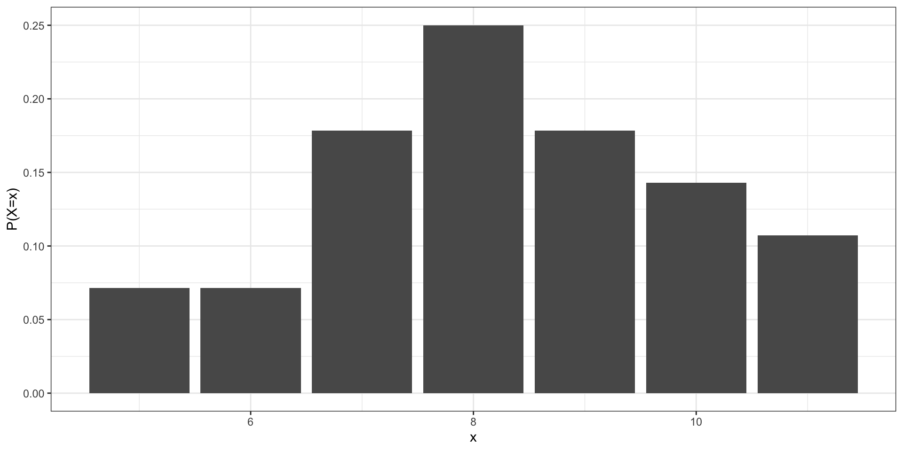
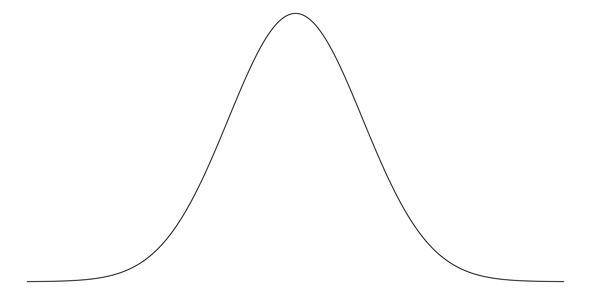
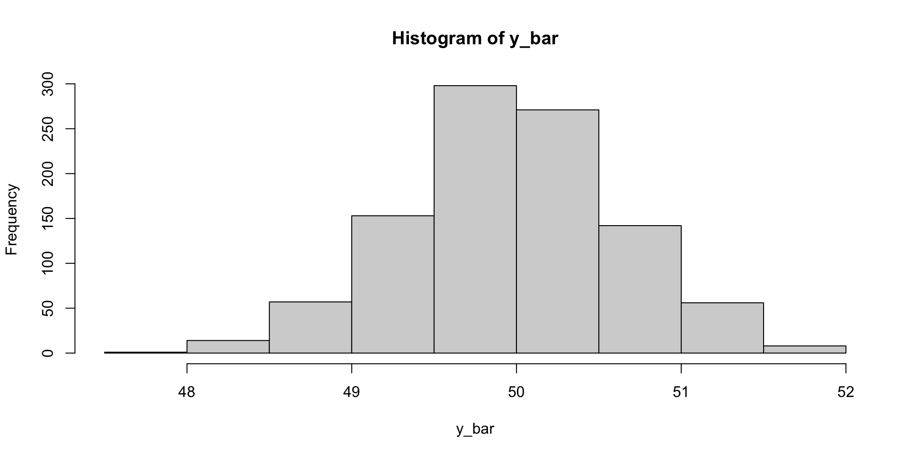

[1] 0.5[1] 0.5Random Variables, Probability Distributions
A Simple Random Sample (SRS) of size \(n\) from a finite population is a subset selected in such a way that every subset of n elements is equally likely to be the one selected.
A random variable is a function defined on a numeric population. We often say that this function value is the value assumed by the random variable. A probability distribution specifies the probabilities associated with all possible values the random variable can assume.
If \(X\) represents the number of RED \(M\&Ms\) in a vending machine size package, then perhaps the probability distribution of \(X\) is something like the following:
| \(x\) | 5 | 6 | 7 | 8 | 9 | 10 | 11 |
|---|---|---|---|---|---|---|---|
| \(P(X=x)\) | \(\frac{2}{28}\) | \(\frac{2}{28}\) | \(\frac{5}{28}\) | \(\frac{7}{28}\) | \(\frac{5}{28}\) | \(\frac{4}{28}\) | \(\frac{3}{28}\) |

When the elements of a population consists of a countable discrete set of values the random variable defined on that population is called discrete random variable.
Properties:
When the population consists of a set of values in a continuous range the random variable defined on that population is called continuous random variable. The probability distribution of a continuous random variable is a smooth curve, and the area under the curve between specified values of the random value correspond to a probability.

Properties:
Suppose that our population consists of all numbers in the interval (0,2) occurring with various frequencies as specified by \(f(x)\).
For some interesting populations that occur naturally, theoretical probability distributions and associated random variables, have been defined.
Discrete
Continuous
A binomial experiment consists of taking \(n\) successive SRS, each of size 1, replacing elements between draws, and counting the number of “successes” (S) obtained, \(m\). The alternative is “failures” (F).
Let \(X_i\) be the random variable that assumes the value of the outcome of the \(i\)-th draw for each \(i=1,2,\dots,n\).
Let \(X_i\) assume the value 1 if the outcome of the \(i\)-th draw is S or the value of 0 if the outcome is F. For a repeated process, \(n\) random variables, \(X_1,X_2,\dots,X_n\), are distributed as follows:
| \(x\) | 0 | 1 |
|---|---|---|
| \(P(X=x)\) | \(1-\pi\) | \(\pi\) |
Now define a new random variable \(Y\) so that
\[Y = X_1 + X_2 + X_3 + \cdots + X_n\]
\[ Y\sim \text{Binomial}(n,\pi);\quad y=1,2,\dots,n; \quad 0\lt \pi\lt 1 \]
\(P(Y=y)=\)
The mean of a discrete random variable \(X\) is: \[E(X) = \mu = \sum_x\,x \cdot P(X=x)\]
The variance of a discrete random variable \(X\) is: \[V(X) = \sigma^2= \sum_x\,(x - E(X))^2\cdot \ P(X=x)\]
The standard deviation of a random variable \(X\) is \[\sqrt{V(X)}=\sigma\]
Using the previous formula, the mean of a Binomial random variable \(Y\), is shown to be \(E(Y)=\mu = n \pi\)
The variance is shown to be \(V(Y) =\sigma^2= n\pi(1 - \pi)\).
Thus the standard deviation of a Binomial random variable is \(\sigma= \sqrt{n\,\pi(1 - \pi)}\)
Consider a Binomial population where \(Y\sim Bin(3,1/3)\).
\(n\) identical trials are made.
Each trial results in either Success(\(S\)) or Failure(\(F\)). (only two possible outcomes).
The probability of success (\(\pi\)) remains the same from trial to trial.
The trials are independent.
Interest is in the number of successes obtained in the \(n\) trials. The number is viewed as being the value assumed by a Binomial (\(n,\ \pi\)) random variable \(Y\).
Let \(Y\sim Bin(n,\pi)\)
dbinom(x=y, size=n, prob=pi)pbinom(x=y, size=n, prob=pi)The mean of a continuous random variable \(X\) is: \[E(X) = \mu = \int_x\,x \cdot f(x) dx\]
The variance of a continuous random variable \(X\) is: \[V(X) = \sigma^2= \int_x\,(x - E(X))^2\cdot \ f(x) dx=E(X^2)-E(X)^2\]
The standard deviation of a random variable \(X\) is \[\sqrt{V(X)}=\sigma\]
The Normal probability distribution is an example of a continuous distribution, and is defined in the interval \((-\infty,\infty)\). This is a bell-shaped distribution and is commonly used to model continuous data.
\(f(x)=\)
where
\[ P(a \leq X \leq b) = \frac{1}{\sqrt{2\pi}\sigma}\int_a^b e^{-\frac{1}{2}(\frac{x-\mu}{\sigma})^2} dx \]
The standard normal distribution is a normal distribution with \(\mu=0\) and \(\sigma^2=1\), and is represented by the random variable \(Z\). If \(X\sim N(\mu,\sigma^2)\), then the following transformation converts \(X\) into a standard normal random variable.
\[ Z=\frac{X-\mu}{\sigma} \]
If \(X\sim N(0,\sigma^2)\), then we can use a Z-table to compute areas under the curve. For example,
\(P(a\leq X\leq b)=\)
We may also use R to compute probabilities for random variables that follow a normal distribution. While any \(\mu\) and \(\sigma\) can be selected, the default is \(0\) and \(1\), respectively.
dnorm(): computes \(f(z)\)pnorm(): computes \(p\) from \(P(Z\leq z)=p\) for a specified \(z\)qnorm(): computes \(z\) from \(P(Z\leq z)=p\) for a specified \(p\)Similar to the previous problems, if we know \(\mu\) and \(\sigma\), we can solve probability problems using the mean and sd arguments in the xnorm() functions.
Define the Sample Mean as
\[ \bar{Y}=\frac1n\sum_{i=1}^n Y_i \]
where \(Y_1,Y_2,\dots,Y_n\) are taken independently from the population. That is, taking the sum of all of the values and dividing it by the count of values. Any function of \(Y_1,Y_2,\dots,Y_n\) is a random variable, including \(\bar{Y}\).
If \(Y_1,Y_2,\dots,Y_n\) are each independently distributed from a normal distribution with mean \(\mu\) and variance \(\sigma^2\), then
Standard Error of the Mean: the standard deviation of \(\bar{Y}\)
When sample size \(n\) is large, the random variable \(\bar{Y}\) is approximately normally distributed with mean \(\mu\) and variance \(\sigma^2/n\). That is,
\[ \bar{Y}\approx N(\mu,\sigma^2/n) \]
Let’s take \(n=20\) and let \(Y\sim N(50, 16)\). A single sample of size 20 from this population may look like the following:
Let’s say that we take many samples of size 20 from the population. We would expect \(\bar{Y}\) to be approximately normal with mean 50 and variance 16/20 = 0.8.
replicate(): repeat an expression n times (different n from rnorm)apply(): for each column (MARGIN = 2), apply the mean function
Let’s say that we take many samples of size 20 from the population. We would expect \(\bar{Y}\) to be approximately normal with mean 50 and variance 16/20 = 0.8.
replicate(): repeat an expression n times (different n from rnorm)apply(): for each column (MARGIN = 2), apply the mean functionSuppose that you are estimating the average weight of sheep in a large herd. You obtain a random sample of size \(n=50\), and can assume that \(\mu=40\) and \(\sigma^2=4\). What is the probability that the sample mean will be within 0.1 pounds of \(\mu\)?
\[ \bar{Y}\approx \]
\[ P(39.9\leq \bar{Y} \leq 40.1) \] Standard Normal Distribution
Normal Distribution
Poisson distribution is used to model the number of occurrences of “rare” events in certain intervals of time and space. A Poisson random variable is a discrete random variable as it represents a count.
\[ P(X=x)=\frac{e^{-\lambda}\lambda^x}{x!}; \quad x=0,1,2,3,\dots \]
where \(\lambda\) is the mean parameter and represents the expected number of events occurring in the interval of interest.
\(X\) = # of alpha particles emitted from a polonium bar in an 8 minute period
\(Y\) = # of flaws on a standard size piece of manufactured product (e.g., 100m coaxial cable, 100 sq.meter plastic sheeting)
\(Z\) = # of hits on a web page in a 24h period
Let \(X\sim Poi(\lambda)\).
Let \(X\sim Poi(\lambda)\).
dpois(x=x, lambda=lambda)
ppois(x=x, lambda=lambda)Let \(\mu=10\) and \(n=30\). When required, approximate \(\sigma^2\) using the variance formula of the Binomial distribution. Compute each of the following problems for the Binomial, Normal, and Poisson distributions, as well as for \(\bar{Y}\).
Stat 801A